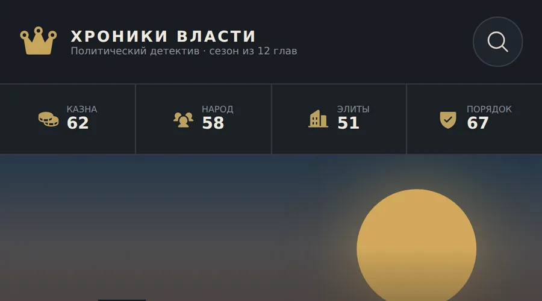

Чотири показники держави
Скарбниця, народ, еліти й порядок. Кожне рішення зсуває їх, і баланс між ними — головне напруження гри.
Мобільний політичний детектив, у якому сцени, наслідки й наступні сюжетні лінії пише мовна модель, а гравець лише обирає. Сезон на дванадцять глав, чотири показники держави й відкладені наслідки рішень, що наздоганяють через кілька ходів.
Кожен хід гравець обирає одну з трьох дій. Серверна функція надсилає моделі стан історії й отримує наступну сцену строго за JSON-схемою, тож відповідь завжди має очікувану форму: сцена, три варіанти, зміни показників, нові зачіпки й теорії.
Але форма — ще не сенс. Модель може «запам’ятати» наслідок від варіанта, якого гравець не обирав. Тому після відповіді код перевіряє причинність: відкладений ефект виживає лише тоді, коли походить від реально зробленого вибору, а не від двох відкинутих альтернатив.
Ключ до моделі ніколи не потрапляє в браузер: виклик іде через Supabase Edge Function, а частоту запитів обмежує функція в Postgres — щоб одна вкладка не могла спалити весь бюджет.
Скарбниця, народ, еліти й порядок. Кожне рішення зсуває їх, і баланс між ними — головне напруження гри.
Частина ефектів спрацьовує не одразу, а через кілька ходів — і завжди з прив’язкою до вибору, що їх породив.
Зачіпки накопичуються, гравець тримає теорії з рівнем упевненості. Модель не може підмінити теорії гравця: якщо у відповіді з’являються невідомі, сервер повертає попередній список.
Structured output гарантує форму відповіді моделі, а серверна перевірка — зв’язність сюжету між ходами.
Лічильник у Postgres повертає, скільки секунд чекати, і клієнт отримує заголовок Retry-After замість мовчазної відмови.
Ставиться на домашній екран; збирається GitHub Actions і публікується в GitHub Pages.
Клієнт — React на Vite. Увесь стан історії живе в ньому й їде на сервер разом із вибором. Сервер нічого не пам’ятає між ходами, крім лічильника частоти, — тому його нема чого втрачати й легко масштабувати.
Edge Function перевіряє ліміт, збирає запит до моделі з JSON-схемою, розбирає відповідь і відсікає все, що порушує причинність або з’являється нізвідки.
src/
App.tsx стан історії, сцена, вибір, показники
main.tsx точка входу
supabase/
functions/story-turn/ Edge Function: виклик моделі за JSON-схемою
index.ts ліміт → запит → розбір → перевірка причинності
rate-limit.sql обмеження частоти в Postgres
public/ маніфест і service worker
.github/workflows/ збірка й публікація в GitHub Pages
Натисніть на зображення, щоб відкрити його на весь екран. Стрілки ← → гортають галерею.
